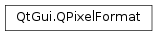

QPixelFormat¶
Synopsis¶
Functions¶
- def
alphaPosition() - def
alphaSize() - def
alphaUsage() - def
bitsPerPixel() - def
blackSize() - def
blueSize() - def
brightnessSize() - def
byteOrder() - def
channelCount() - def
colorModel() - def
cyanSize() - def
greenSize() - def
hueSize() - def
lightnessSize() - def
magentaSize() - def
premultiplied() - def
redSize() - def
saturationSize() - def
subEnum() - def
typeInterpretation() - def
yellowSize() - def
yuvLayout()
Detailed Description¶
PySide2.QtGui.QPixelFormatis a class for describing different pixel layouts in graphics buffersIn Qt there is a often a need to represent the layout of the pixels in a graphics buffer. Internally
PySide2.QtGui.QPixelFormatstores everything in a 64 bit datastructure. This gives performance but also some limitations.
PySide2.QtGui.QPixelFormatcan describe 5 color channels and 1 alpha channel, each can use 6 bits to describe the size of the color channel.The position of the alpha channel is described with a separate enum. This is to make it possible to describe
PySide2.QtGui.QImageformats like ARGB32, and also describe typical OpenGL formats like RBGA8888.How pixels are suppose to be read is determined by the
QPixelFormat.TypeInterpretationenum. It describes if color values are suppose to be read byte per byte, or if a pixel is suppose to be read as a complete int and then masked.There is no support for describing YUV’s macro pixels. Instead a list of YUV formats has been made. When a
PySide2.QtGui.QPixelFormatis describing a YUV format, thePySide2.QtGui.QPixelFormat.bitsPerPixel()value has been deduced by the YUV Layout enum. Also, the color channels should all be set to zero except the fifth color channel that should store thePySide2.QtGui.QPixelFormat.bitsPerPixel()value.See also
QPixelFormat.TypeInterpretation
-
class
PySide2.QtGui.QPixelFormat¶ -
class
PySide2.QtGui.QPixelFormat(colorModel, firstSize, secondSize, thirdSize, fourthSize, fifthSize, alphaSize, alphaUsage, alphaPosition, premultiplied, typeInterpretation[, byteOrder=CurrentSystemEndian[, subEnum=0]]) -
class
PySide2.QtGui.QPixelFormat(QPixelFormat) Parameters: - premultiplied –
PySide2.QtGui.QPixelFormat.AlphaPremultiplied - fourthSize –
PySide2.QtCore.uchar - thirdSize –
PySide2.QtCore.uchar - alphaPosition –
PySide2.QtGui.QPixelFormat.AlphaPosition - secondSize –
PySide2.QtCore.uchar - alphaSize –
PySide2.QtCore.uchar - fifthSize –
PySide2.QtCore.uchar - byteOrder –
PySide2.QtGui.QPixelFormat.ByteOrder - alphaUsage –
PySide2.QtGui.QPixelFormat.AlphaUsage - typeInterpretation –
PySide2.QtGui.QPixelFormat.TypeInterpretation - subEnum –
PySide2.QtCore.uchar - QPixelFormat –
PySide2.QtGui.QPixelFormat - colorModel –
PySide2.QtGui.QPixelFormat.ColorModel - firstSize –
PySide2.QtCore.uchar
Creates a null pixelformat. This format maps to
QImage.Format_Invalid.Creates a
PySide2.QtGui.QPixelFormatwhich assigns its data to the attributes.colorModelwill be put into a buffer which is 4 bits long.firstSizesecondSizethirdSizefourthSizefifthSizealphaSizeare all meant to represent the size of a channel. The channels will be used for different uses dependent on thecolorModel. For RGB the firstSize will represent the Red channel. On CMYK it will represent the value of the Cyan channel.alphaUsagerepresents if the alpha channel is used or not.alphaPositionis the position of the alpha channel.premultipliedrepresents if the alpha channel is already multiplied with the color channels.typeInterpretationis how the pixel is interpreted.byteOrderrepresents the endianness of the pixelformat. This defaults toCurrentSystemEndian.subEnumis used for colorModels that have to store some extra information with supplying an extra enum. This is used by YUV to store the YUV type The default value is 0.- premultiplied –
-
PySide2.QtGui.QPixelFormat.FieldWidth¶
-
PySide2.QtGui.QPixelFormat.Field¶
-
PySide2.QtGui.QPixelFormat.ColorModel¶ This enum type is used to describe the color model of the pixelformat. Alpha was added in 5.5.
Constant Description QPixelFormat.RGB The color model is RGB. QPixelFormat.BGR This is logically the opposite endian version of RGB. However, for ease of use it has its own model. QPixelFormat.Indexed The color model uses a color palette. QPixelFormat.Grayscale The color model is Grayscale. QPixelFormat.CMYK The color model is CMYK. QPixelFormat.HSL The color model is HSL. QPixelFormat.HSV The color model is HSV. QPixelFormat.YUV The color model is YUV. QPixelFormat.Alpha There is no color model, only alpha is used.
-
PySide2.QtGui.QPixelFormat.AlphaUsage¶ This enum describes if the alpha channel is used or not. Sometimes the pixelformat will have a size for the alpha channel, but the pixel format does actually not use the alpha channel. For example RGB32 is such a format. The RGB channels are 8 bits each, and there is no alpha channel. But the complete size for each pixel is 32. Therefore the alpha channel size is 8, but the alpha channel is ignored. Its important to note that in such situations the position of the alpha channel is significant.
Constant Description QPixelFormat.IgnoresAlpha The alpha channel is not used. QPixelFormat.UsesAlpha The alpha channel is used.
-
PySide2.QtGui.QPixelFormat.AlphaPosition¶ This enum type is used to describe the alpha channels position relative to the color channels.
Constant Description QPixelFormat.AtBeginning The alpha channel will be put in front of the color channels . E.g. ARGB. QPixelFormat.AtEnd The alpha channel will be put in the back of the color channels. E.g. RGBA.
-
PySide2.QtGui.QPixelFormat.AlphaPremultiplied¶ This enum type describes the boolean state if the alpha channel is multiplied into the color channels or not.
Constant Description QPixelFormat.NotPremultiplied The alpha channel is not multiplied into the color channels. QPixelFormat.Premultiplied The alpha channel is multiplied into the color channels.
-
PySide2.QtGui.QPixelFormat.TypeInterpretation¶ This enum describes how each pixel is interpreted. If a pixel is read as a full 32 bit unsigned integer and then each channel is masked out, or if each byte is read as unsigned char values. Typically
PySide2.QtGui.QImageformats interpret one pixel as an unsigned integer and then the color channels are masked out. OpenGL on the other hand typically interpreted pixels “one byte after the other”, Ie. unsigned byte.PySide2.QtGui.QImagealso have the format Format_RGBA8888 (and its derivatives), where the pixels are interpreted as unsigned bytes. OpenGL has extensions that makes it possible to upload pixel buffers in an unsigned integer format.
The image above shows a ARGB pixel in memory read as an unsigned integer. However, if this pixel was read byte for byte on a little endian system the first byte would be the byte containing the B-channel. The next byte would be the G-channel, then the R-channel and finally the A-channel. This shows that on little endian systems, how each pixel is interpreted is significant for integer formats. This is not the case on big endian systems.
Constant Description QPixelFormat.UnsignedInteger QPixelFormat.UnsignedShort QPixelFormat.UnsignedByte QPixelFormat.FloatingPoint
-
PySide2.QtGui.QPixelFormat.YUVLayout¶ YUV is not represented by describing the size of the color channels. This is because YUV often use macro pixels, making the concept of sperate color channels invalid. Instead the different YUV layouts are described with this enum.
Constant Description QPixelFormat.YUV444 QPixelFormat.YUV422 QPixelFormat.YUV411 QPixelFormat.YUV420P QPixelFormat.YUV420SP QPixelFormat.YV12 QPixelFormat.UYVY QPixelFormat.YUYV QPixelFormat.NV12 QPixelFormat.NV21 QPixelFormat.IMC1 QPixelFormat.IMC2 QPixelFormat.IMC3 QPixelFormat.IMC4 QPixelFormat.Y8 QPixelFormat.Y16
-
PySide2.QtGui.QPixelFormat.ByteOrder¶ This enum describes the of the pixel format. This enum is mostly ignored but have some use cases for YUV formats. BGR formats have their own color model, and should not be described by using the opposite endianness on an RGB format.
Constant Description QPixelFormat.LittleEndian The byte order is little endian. QPixelFormat.BigEndian The byte order is big endian. QPixelFormat.CurrentSystemEndian This enum will not be stored, but is converted in the constructor to the endian enum that matches the enum of the current system.
-
PySide2.QtGui.QPixelFormat.alphaPosition()¶ Return type: PySide2.QtGui.QPixelFormat.AlphaPositionAccessor function for .
-
PySide2.QtGui.QPixelFormat.alphaSize()¶ Return type: PySide2.QtCore.ucharAccessor function for the alpha channel size.
-
PySide2.QtGui.QPixelFormat.alphaUsage()¶ Return type: PySide2.QtGui.QPixelFormat.AlphaUsageAccessor function for .
-
PySide2.QtGui.QPixelFormat.bitsPerPixel()¶ Return type: PySide2.QtCore.ucharAccessor function for the bits used per pixel. This function returns the sum of the color channels + the size of the alpha channel.
-
PySide2.QtGui.QPixelFormat.blackSize()¶ Return type: PySide2.QtCore.ucharAccessor function for the black/key color channel.
-
PySide2.QtGui.QPixelFormat.blueSize()¶ Return type: PySide2.QtCore.ucharAccessor function for the size of the blue color channel.
-
PySide2.QtGui.QPixelFormat.brightnessSize()¶ Return type: PySide2.QtCore.ucharAccessor function for the brightness channel size.
-
PySide2.QtGui.QPixelFormat.byteOrder()¶ Return type: PySide2.QtGui.QPixelFormat.ByteOrderThe byte order is almost always set the the byte order of the current system. However, it can be useful to describe some YUV formats. This function should never return
QPixelFormat.CurrentSystemEndianas this value is translated to a endian value in the constructor.
-
PySide2.QtGui.QPixelFormat.channelCount()¶ Return type: PySide2.QtCore.ucharAccessor function for getting the . Channel Count is deduced by color channels with a size > 0 and if the size of the alpha channel is > 0.
-
PySide2.QtGui.QPixelFormat.colorModel()¶ Return type: PySide2.QtGui.QPixelFormat.ColorModelAccessor function for getting the .
-
PySide2.QtGui.QPixelFormat.cyanSize()¶ Return type: PySide2.QtCore.ucharAccessor function for the cyan color channel.
-
PySide2.QtGui.QPixelFormat.greenSize()¶ Return type: PySide2.QtCore.ucharAccessor function for the size of the green color channel.
-
PySide2.QtGui.QPixelFormat.hueSize()¶ Return type: PySide2.QtCore.ucharAccessor function for the hue channel size.
-
PySide2.QtGui.QPixelFormat.lightnessSize()¶ Return type: PySide2.QtCore.ucharAccessor function for the lightness channel size.
-
PySide2.QtGui.QPixelFormat.magentaSize()¶ Return type: PySide2.QtCore.ucharAccessor function for the megenta color channel.
-
PySide2.QtGui.QPixelFormat.premultiplied()¶ Return type: PySide2.QtGui.QPixelFormat.AlphaPremultipliedAccessor function for the
QPixelFormat.AlphaPremultipliedenum. This indicates if the alpha channel is multiplied in to the color channels.
-
PySide2.QtGui.QPixelFormat.redSize()¶ Return type: PySide2.QtCore.ucharAccessor function for the size of the red color channel.
-
PySide2.QtGui.QPixelFormat.saturationSize()¶ Return type: PySide2.QtCore.ucharAccessor function for the saturation channel size.
-
PySide2.QtGui.QPixelFormat.subEnum()¶ Return type: PySide2.QtCore.ucharAccessor for the datapart which contains subEnums This is the same as the
PySide2.QtGui.QPixelFormat.yuvLayout()function.
-
PySide2.QtGui.QPixelFormat.typeInterpretation()¶ Return type: PySide2.QtGui.QPixelFormat.TypeInterpretationAccessor function for the type representation of a color channel or a pixel.
See also
QPixelFormat.TypeInterpretation
-
PySide2.QtGui.QPixelFormat.yellowSize()¶ Return type: PySide2.QtCore.ucharAccessor function for the yellow color channel.
-
PySide2.QtGui.QPixelFormat.yuvLayout()¶ Return type: PySide2.QtGui.QPixelFormat.YUVLayoutAccessor function for the
QPixelFormat.YUVLayout. It is difficult to describe the color channels of a YUV pixel format since YUV color model uses macro pixels. Instead the layout of the pixels are stored as an enum.
© 2018 The Qt Company Ltd. Documentation contributions included herein are the copyrights of their respective owners. The documentation provided herein is licensed under the terms of the GNU Free Documentation License version 1.3 as published by the Free Software Foundation. Qt and respective logos are trademarks of The Qt Company Ltd. in Finland and/or other countries worldwide. All other trademarks are property of their respective owners.